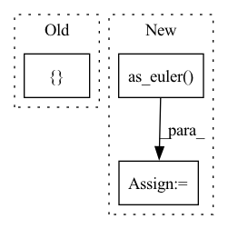

Pattern ID :6129

Before Change
angles[:, 2] = rnd.uniform(low=-np.pi, high=np.pi, size=(n,))
for axis1 in ["x", "y", "z"]:
for axis2 in ["x", "y", "z"]:
if axis1 == axis2:
continue
// Extrinsic rotations
After Change
// Extrinsic rotations
seq = "".join([seq_tuple[0], seq_tuple[1], seq_tuple[0]])
rotation = Rotation.from_euler(seq, angles)
angles_quat = rotation.as_euler(seq)
angles_mat = rotation._as_euler_from_matrix(seq)
assert_allclose(angles, angles_quat, atol=0, rtol=1e-13)
assert_allclose(angles, angles_mat, atol=0, rtol=1e-9)
test_stats(angles_quat - angles, 1e-16, 1e-14)
In pattern: SUPERPATTERN
Frequency: 3
Non-data size: 3
Instances
Fragment ID: 21136048
Project Name: scipy/scipy
Commit Name: 316159b15927f5c4eaef6b1092464c7266bea489
Time: 2022-12-07
Author: 15084103+evbernardes@users.noreply.github.com
File Name: scipy/spatial/transform/tests/test_rotation.py
M Class Name: AnonimousClass
N Class Name: AnonimousClass
M Method Name: test_as_euler_symmetric_axes(0)
N Method Name: test_as_euler_symmetric_axes(0)
M Parent Class:
N Parent Class:
M File Name: scipy/spatial/transform/tests/test_rotation.py
N File Name: scipy/spatial/transform/tests/test_rotation.py
M Start Line: 597
M End Line: 616
N Start Line: 626
N End Line: 653
'>
Before Change
altitude = self._vehicle_nav_sat_fix.altitude
// Attitude
attitude_ned_q = np.array([self._vehicle_pose_stamped.pose.orientation.y,
self._vehicle_pose_stamped.pose.orientation.x,
-self._vehicle_pose_stamped.pose.orientation.z,
self._vehicle_pose_stamped.pose.orientation.w])
// Convert ENU->NED + re-center yaw
attitude_ned = Rotation.from_quat(attitude_ned_q) * Rotation.from_rotvec(np.array([0, 0, np.pi / 2]))
After Change
enu_to_ned = Rotation.from_euler("XYZ", np.array([np.pi, 0, np.pi / 2]))
attitude_ned = Rotation.from_quat(messaging.as_np_quaternion(self._vehicle_pose_stamped.pose.orientation)) \
* enu_to_ned.inv()
rpy = attitude_ned.as_euler("XYZ", degrees=True)
rpy[0] = (rpy[0] + 180) % 360
attitude_ned = Rotation.from_euler("XYZ", rpy, degrees=True)
attitude_ned = attitude_ned.as_quat()
orientation = messaging.as_ros_quaternion(attitude_ned)
return GeoPoseStamped(header=messaging.create_header("base_link"),
pose=GeoPose(
'>
Fragment ID: 21136054
Project Name: hmakelin/gisnav
Commit Name: f7714268168bd74435880c8bea2e5e1e045c1db9
Time: 2022-12-14
Author: hmakelin@protonmail.com
File Name: gisnav/nodes/ardupilot_node.py
M Class Name: ArduPilotNode
N Class Name: ArduPilotNode
M Method Name: vehicle_geopose(1)
N Method Name: vehicle_geopose(1)
M Parent Class: _AutopilotNode
N Parent Class: _AutopilotNode
M File Name: gisnav/nodes/ardupilot_node.py
N File Name: gisnav/nodes/ardupilot_node.py
M Start Line: 106
M End Line: 114
N Start Line: 107
N End Line: 114
'>
Before Change
if self.vehicle_geopose is not None:
vehicle_attitude = Attitude(q=messaging.as_np_quaternion(self.vehicle_geopose.pose.orientation))
vehicle_attitude = vehicle_attitude.as_rotation()
gimbal_attitude = vehicle_attitude * Rotation.from_euler("XYZ", [0, -np.pi / 2, 0])
gimbal_attitude = messaging.as_ros_quaternion(gimbal_attitude.as_quat())
return gimbal_attitude
else:
After Change
// TODO: assumes static nadir facing camera, do proper implementation
if self.vehicle_geopose is not None:
vehicle_attitude = Rotation.from_quat(messaging.as_np_quaternion(self.vehicle_geopose.pose.orientation))
gimbal_rpy = vehicle_attitude.as_euler("xyz", degrees=True)
gimbal_rpy[1] -= 90
gimbal_attitude = Rotation.from_euler("xyz", gimbal_rpy, degrees=True)
return messaging.as_ros_quaternion(gimbal_attitude.as_quat())
else:
'>
Fragment ID: 21136052
Project Name: hmakelin/gisnav
Commit Name: f7714268168bd74435880c8bea2e5e1e045c1db9
Time: 2022-12-14
Author: hmakelin@protonmail.com
File Name: gisnav/nodes/ardupilot_node.py
M Class Name: ArduPilotNode
N Class Name: ArduPilotNode
M Method Name: gimbal_quaternion(1)
N Method Name: gimbal_quaternion(1)
M Parent Class: _AutopilotNode
N Parent Class: _AutopilotNode
M File Name: gisnav/nodes/ardupilot_node.py
N File Name: gisnav/nodes/ardupilot_node.py
M Start Line: 168
M End Line: 172
N Start Line: 168
N End Line: 172